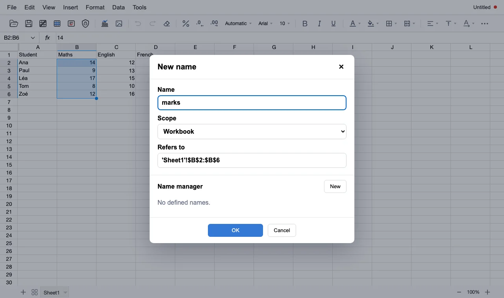

Named ranges
Giving a name
- Select the cell or the range.
- Right-click › Define name… (or the arrow of the name box › Name manager).
- Type the name, choose the scope, OK.

| Field | Content |
|---|---|
| Name | starts with a letter or _; letters, digits, _ and ., no space; not an address such as B2 |
| Scope | Workbook: read from all sheets; a sheet: read only from it, where it prevails over a name of the workbook |
| Refers to | a cell or a range, with its sheet: 'Sheet1'!$B$2:$B$6 |
Using a name
=AVERAGE(marks)
=price*(1+tax)- The arrow of the name box lists the names: choosing one selects its range, in its sheet.
- When the selection is exactly a named range, the name box shows its name.
- A drop-down list can read a range of cells, given by its address.
Editing, deleting
In the Name manager, clicking a name brings its fields back for editing; Delete deletes it; New goes back to an empty name. Before deleting a name, replace the formulas that read it: they keep their last value, then no longer calculate.
Names are saved in the Excel file and read from it.